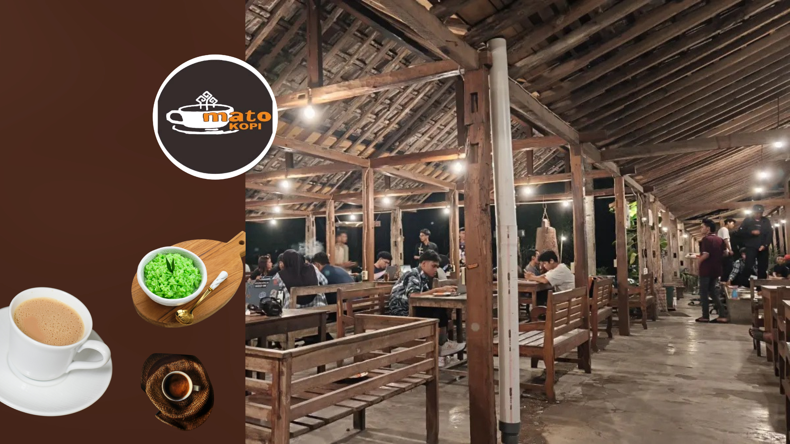
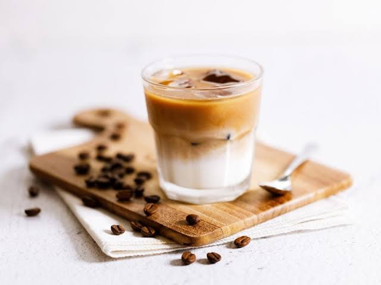
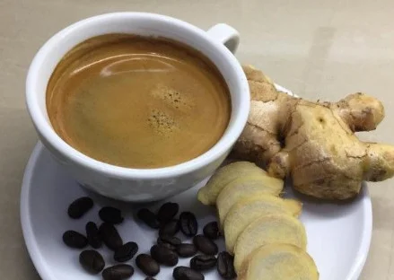
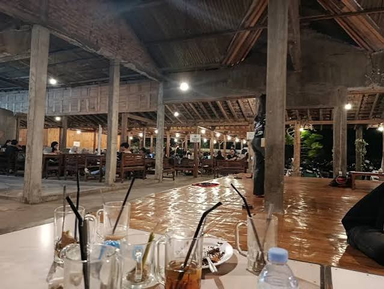
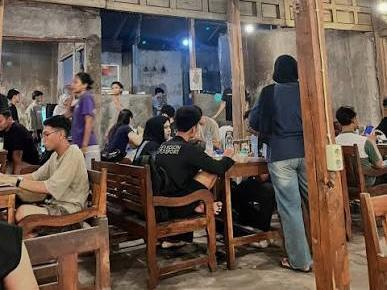

Ngopi, makan, dan berkumpul di Yogyakarta
Tempat nongkrong santai berkonsep lesehan dengan suasana hangat khas Jogja.

Tentang Kami
Ruang nongkrong legendaris & bersahaja di Yogyakarta
Mato Kopi hadir sebagai salah satu ruang berkumpul favorit di Yogyakarta yang digemari oleh mahasiswa, pekerja, hingga komunitas. Menawarkan area luas dengan konsep lesehan yang santai, kami menyediakan tempat yang pas untuk berdiskusi, mengerjakan tugas, atau sekadar menikmati malam di kota Jogja.



Suasana Lesehan Luas
Area nongkrong terbuka yang luas dan nyaman untuk berkumpul bersama teman maupun komunitas.
Harga Merakyat
Ramah di kantong pelajar, mahasiswa, dan seluruh kalangan masyarakat Yogyakarta.
Menu Khas Favorit
Terkenal dengan tape ketan yang lembut, racikan kopi susu (Kopasus), kopi jahe (Kojapa), dan aneka camilan nikmat.
Lokasi Strategis
Mudah diakses dan menjadi titik kumpul populer bagi anak muda Jogja setiap malam.
Layanan Kami
Fasilitas dan kenyamanan yang kami sediakan untuk menemani waktu santai Anda.
Makan & Minum Di Tempat
Menyediakan area lesehan yang luas, santai, dan khas kedai malam Yogyakarta untuk menikmati hidangan secara langsung.
Pemesanan Bungkus (Takeaway)
Melayani pembelian menu makanan dan minuman favorit Anda untuk dibawa pulang dengan cepat dan higienis.
Racikan Kopi Khas
Menyajikan menu legendaris seperti Kopasus (kopi susu) dan Kojapa (kopi jahe) yang menjadi ciri khas kedai kami.
Ruang Komunitas & Diskusi
Tempat berkumpul yang ideal bagi mahasiswa dan berbagai komunitas di Jogja untuk berdiskusi atau mengerjakan tugas.
Lokasi Kedai
Kunjungi Mato Kopi di kawasan Selokan Mataram, Depok, Sleman, Yogyakarta.
Mato Kopi Selokan Mataram
Alamat Lengkap:
Jl. Selokan Mataram, Dabag, Condongcatur, Kec. Depok, Kabupaten Sleman, Daerah Istimewa Yogyakarta 55281.
Jam Operasional:
Buka 24 Jam Nonstop
Fasilitas & Suasana:
Lesehan luas, area parkir, cocok untuk tempat nugas, diskusi komunitas, atau nongkrong santai hingga larut malam.
Menu Favorit Mato Kopi
Pilihan tape ketan khas serta aneka minuman nikmat untuk menemani waktu nongkrong Anda.

Tape Ketan Putih
Rp 8.000Camilan manis segar dengan tekstur lembut berair yang klasik.

Tape Ketan Hijau
Rp 8.000Olahan ketan manis lembut dengan aroma wangi pandan yang khas.
Tape Ketan Hitam
Rp 10.000Sajian ketan hitam kenyal dengan rasa manis legit yang pekat.

Tape Ketan Susu
Rp 10.000Ketan pulen hangat dengan siraman susu kental manis yang gurih dan nikmat.

Es Tape Ketan
Rp 10.000Perpaduan tape ketan segar dengan es dingin yang menyegarkan tenggorokan.

Tape Ketan Manggo
Rp 12.000Ketan lembut berpadu potongan mangga manis segar dan saus creamy.

Es Teh
Rp 4.000Minuman penyegar sederhana yang pas untuk bersantai.
Ulasan Pengunjung
"Cerita dan pengalaman langsung dari para pengunjung setia Mato Kopi, mulai dari mahasiswa yang nugas sampai malam, komunitas yang kumpul, hingga pecinta tape ketan di kawasan Selokan Mataram."
Galeri Mato Kopi
Intip suasana santai, area lesehan, dan kehangatan momen di Mato Kopi Yogyakarta.

Area Lesehan Utama
Suasana santai kumpul malam hari.

Sudut Favorit Nugas
Nyaman untuk diskusi dan belajar kelompok.
Menu Andalan
Sajian lembut tape ketan.

Gathering Komunitas
Ruang luas muat untuk banyak orang.

Suasana Malam
Nongkrong 24 jam nonstop.

Aneka Camilan
Pendamping ngopi yang ramah kantong.
Kontak & Pemesanan
Terhubung dengan Mato Kopi Yogyakarta melalui kanal resmi atau kirimkan pemesanan & pesan langsung.